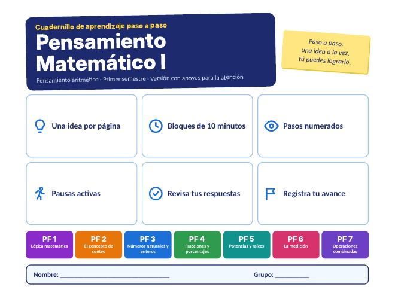
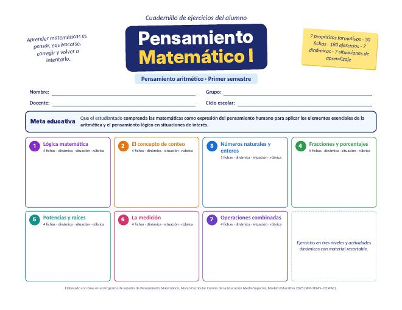

Recibe recordatorios por correo
Regístrate y te avisaremos por correo 3 días y 1 día antes de cada evaluación de Pensamiento Matemático I, con los temas que debes repasar.
Videos, presentaciones y cuadernillos de la clase para repasar en casa. Cada color es un propósito formativo, igual que en tus presentaciones y videos.
Entraste como ·
Regístrate y te avisaremos por correo 3 días y 1 día antes de cada evaluación de Pensamiento Matemático I, con los temas que debes repasar.
Calendario de Media Superior del Estado de México con los días sin clases, las vacaciones y las fechas de esta materia: evaluaciones y temas.
Fuente: calendario de Media Superior 2026-2027 de la SECTI del Estado de México. Si la escuela anuncia un cambio, se actualizará aquí.
Aquí aparecen los exámenes y entregas del semestre, con los temas que debes repasar. Las fechas ya aplicadas se marcan en gris.
Todavía no hay fechas publicadas. El profesor las agregará aquí.
Un simulador por propósito formativo: cambia los valores y mira qué pasa. Sirven para entender el tema antes de practicar.
Elige un tema y resuelve rondas de 10 ejercicios. Cada ejercicio es nuevo, se revisa al momento y te explica cómo se resuelve. Practica todas las veces que quieras.
Elige un tema para empezar.
Elige un tema y contesta 5 preguntas. Al terminar verás tu calificación y la explicación de cada respuesta. Puedes intentarlo las veces que quieras; el profesor ve tus resultados para saber qué temas reforzar.
Elige un tema para empezar.
Pensamiento Matemático I trabaja el pensamiento aritmético en siete propósitos formativos. En cada uno verás qué se espera que logres y los contenidos que estudiaremos, junto con los recursos del blog que corresponden.
Propósito formativoAplica conceptos básicos de lógica matemática en situaciones de su contexto para desarrollar esquemas de razonamiento estructurado.
Recursos: Video · Presentación
Propósito formativoComprende el concepto de conteo a partir del análisis de los procesos sociales que llevaron a su desarrollo para aplicarlo en situaciones de interés.
Recursos: Video · Presentación
Propósito formativoAnaliza distintas situaciones cotidianas en donde intervenga el proceso de contar, para comprender la clasificación de los números y realizar operaciones básicas entre números naturales y enteros.
Recursos: Video · Presentación
Propósito formativoComprende el concepto de unidad y la relación entre números fraccionarios y enteros, para realizar operaciones con fracciones y porcentajes.
Recursos: Video · Presentación
Propósito formativoComprende los conceptos de potenciación y radicación para realizar operaciones con exponentes y radicales.
Recursos: Video · Presentación
Propósito formativoComprende el concepto de medición a partir del análisis de los procesos sociales que llevaron a su desarrollo para aplicarlo en situaciones de interés.
Recursos: Video · Presentación
Propósito formativoAplica los elementos de la aritmética para resolver cálculos combinados con números reales.
Recursos: Video · Presentación
¿Todo lo que decimos es verdadero o falso? En este video vemos qué es una proposición, qué frases no lo son (preguntas, órdenes, opiniones y enunciados abiertos), la diferencia entre proposiciones simples y compuestas, los conectivos lógicos y cómo saber cuánto vale una proposición compuesta.
El video todavía no tiene narración. En el reto rápido, pausa en cada frase y decide si es proposición antes de ver la respuesta.
Tarea: resuelve la Ficha 1.1 de tu cuadernillo.
Cómo contaron Mesopotamia, Egipto, los olmecas y los mayas, cómo nació en India y Arabia el sistema que usamos hoy, quién lo llevó a Europa, la diferencia entre número y numeral, el valor posicional y el ábaco.
El video todavía no tiene narración. Míralo con tu cuaderno abierto y resuelve cada ejemplo antes de que aparezca el resultado.
Respuestas: 5 · numeral · 20 · Mesopotamia
Tarea: resuelve las Fichas 2.1 a 2.4 de tu cuadernillo.
La clasificación de los números reales, la suma, resta, multiplicación y división de enteros, las propiedades de las operaciones, la factorización en primos y el MCD y el MCM con un ejemplo de tinacos y garrafas.
El video todavía no tiene narración. Míralo con tu cuaderno abierto y resuelve cada ejemplo antes de que aparezca el resultado.
Respuestas: −3 · 21 · distributiva · −9
Tarea: resuelve las Fichas 3.1 a 3.5 de tu cuadernillo.
En casi tres minutos repasamos qué dice una fracción, cómo sacar la fracción de una cantidad, las fracciones equivalentes, las operaciones, la proporción directa e inversa, los porcentajes, los descuentos con IVA y un ejemplo con el ahorro de agua.
El video todavía no tiene narración. Míralo con tu cuaderno abierto y resuelve cada ejemplo antes de que aparezca el resultado.
Respuestas: 10 · sí · 3/5 · 2/3
Tarea: resuelve las Fichas 4.1 a 4.5 de tu cuadernillo.
Las partes de una potencia, las leyes de los exponentes, el exponente cero y los negativos, las partes de una raíz y cómo la raíz deshace la potencia, con un ejemplo de una cisterna.
El video todavía no tiene narración. Míralo con tu cuaderno abierto y resuelve cada ejemplo antes de que aparezca el resultado.
Respuestas: 81 · 128 · 1 · 1/100
Tarea: resuelve las Fichas 5.1 a 5.4 de tu cuadernillo.
Qué es medir, por qué se necesitó una unidad común, el Sistema Internacional, los múltiplos y submúltiplos, la notación científica y la razón y proporción, con ejemplos de consumo de agua.
El video todavía no tiene narración. Míralo con tu cuaderno abierto y resuelve cada ejemplo antes de que aparezca el resultado.
Respuestas: 3 000 m · 4.5 × 106 · 2 × 10−3 · kilogramo
Tarea: resuelve las Fichas 6.1 a 6.4 de tu cuadernillo.
La jerarquía de operaciones, los signos de agrupación, la resta como suma del opuesto y ejercicios paso a paso con potencias, raíces, fracciones y decimales, hasta calcular si alcanza el agua de un tinaco.
El video todavía no tiene narración. Míralo con tu cuaderno abierto y resuelve cada ejemplo antes de que aparezca el resultado.
Respuestas: 18 · 50 · −6 · 3
Tarea: resuelve las Fichas 7.1 a 7.4 de tu cuadernillo.
Una versión del cuadernillo con instrucciones cortas, un ejercicio por bloque, ejemplos resueltos antes de cada práctica y casillas para marcar tu avance. Sirve para quien prefiere ir más despacio o repasar un tema desde el principio.

Son las mismas diapositivas que vemos en clase. Cada una trae los logros del tema, para qué sirve, ejemplos resueltos, una dinámica y ejercicios de práctica. Vienen en PDF, así que se abren en cualquier celular o computadora.
El cuadernillo de trabajo del semestre. Empieza con un arranque dinámico y tiene una dinámica por cada propósito formativo, con fichas de ejercicios y material recortable para trabajar en equipo.

Si no puedes imprimirlo, copia los ejercicios en tu cuaderno y resuélvelos ahí.
Aquí voy a subir lo que usamos en Pensamiento Matemático I: videos para repasar, las presentaciones de clase y los cuadernillos. Las entradas más nuevas aparecen arriba.